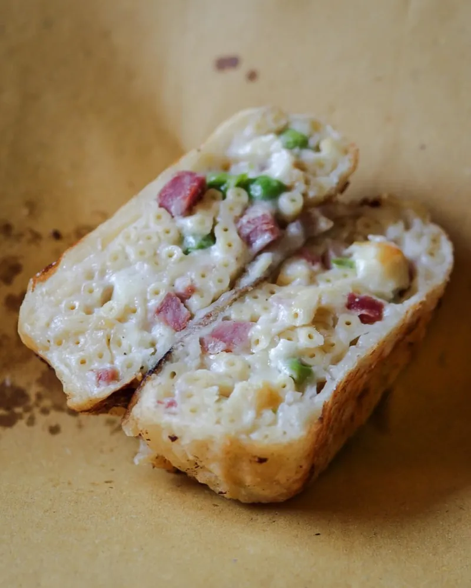

Rosticceria is the street food of Naples: you buy it at the counter, eat it standing up or walking through the alleys, and it keeps visitors company as they explore the sounds and colours of the city. Ours is the traditional kind.
Traditional rosticceria
- Frittatina napoletana: bucatini pasta, béchamel, minced meat and peas, breaded and fried.
- Crocchè: potato croquettes with cheese and parsley.
- Pizza fritta, filled fried pizza: ham and mozzarella, ricotta, or escarole.
- Pizza di scarole, filled with sautéed escarole.
- Focacce margherita, marinara, mimosa and the parigina, with ham, mozzarella and tomato under a layer of puff pastry.
- Filled lingua di pizza, the filling of the day and mini rosticceria.
Sandwiches and saltimbocca
The saltimbocca with porchetta and provola cheese, the zingara ischitana (rustic bread with prosciutto, mozzarella, tomatoes, lettuce and mayonnaise), sandwiches with ham, prosciutto or caprese, toasties and tramezzini.
Freselle and salads
For a light lunch, freselle, twice-baked bread rings: the classic Neapolitan one with cherry tomatoes, tuna, red onion and olives; the caprese with mozzarella bocconcini and pesto; the Cetara with anchovies. And salads: tuna and tomato, caprese with Sorrento tomatoes, the big mixed salad and Caesar salad.
